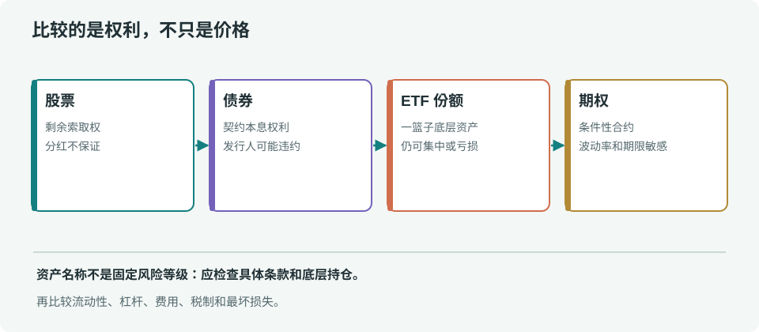
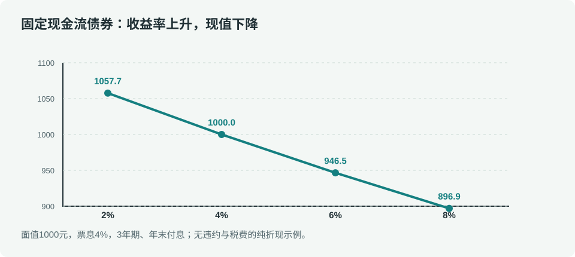

CHAPTER 02 · INVESTMENT RESEARCH
证券品种：股票、债券、基金与衍生品
同样是交易代码，背后的法律权利、现金流和最坏情景可能完全不同。
先识别“谁欠谁”，再谈收益率
同样在证券账户里出现，股票、债券、基金与期权代表的权利却完全不同。股票是对公司净资产和未来剩余收益的权益性请求权；债券一般是发行人按照合同偿付利息和本金的债务性工具；基金是对一个投资组合的份额权利；期权是按约定条件交易标的资产或结算差额的权利（买方）与义务（卖方）。

股票：剩余索取权，而不是固定息票
普通股持有人通常参与公司剩余收益和剩余财产分配，并依公司法、章程和股份类别享有相应权利。分红要受到盈利、现金和公司决策约束，并非固定合同义务；破产清算中股东一般在债权人之后承担剩余结果。优先股和不同市场的股票制度可能含特别条款。
分析股票时，除利润增长，还应查看每股指标是否被增发摊薄、管理层怎样分配资本、分红是否由可持续自由现金流支持、持有人实际承担的治理风险。
债券：固定现金流的价格为何会波动
假设一只面值为 1,000 元、每年付 4% 票息、3 年后还本的固定息票债。它每年末付 40 元，第三年再偿还 1,000 元。如果市场要求的年折现率为 5%，价格应按三个现金流折现求和，而不是简单地把面值乘以票息率。

示例折现率为 5% 时，理论价格约 972.77 元。这个数值不包含违约概率、提前赎回条款、税收或买卖价差；可转债尤其不应只用普通固定息票债的公式估值。
ETF：买的是组合，也要检查组合里面是什么
ETF 通常通过基金份额持有一篮子资产，价格受底层资产净值、市场交易和申赎机制影响。相较直接买入单只股票，它可以分散特定发行人的风险；但行业单一、成分集中、杠杆或跨境交易的 ETF 并不自动等于低风险。
基金的管理费用、托管费用、交易成本、跟踪偏离以及二级市场折溢价都可能影响持有人净回报。比较同类产品，应首先明确指数覆盖面和费用口径，然后观察跟踪表现和成交深度，而非只看最近涨幅。
| 类型 | 核心权利 / 现金流 | 主要风险问题 |
|---|---|---|
| 普通股 | 企业剩余权益；可能分红 | 经营、估值、稀释和流动性 |
| 固定息票债券 | 合同约定付息还本 | 信用、利率、流动性及条款 |
| ETF | 组合资产净值对应的基金份额 | 底层集中度、跟踪、费用和折溢价 |
| 期权买方 | 到期或行权条件下的或有权利 | 权利金全部损失、期限与波动率 |
可转债、期货与期权：嵌入条款改变收益形状
可转换债券一般将债权与转换成股权的选择权结合，但转股价格、赎回、回售与信用事件都要逐条阅读。转债价格可能同时受公司信用、利率和股票价格影响，“下有保底、上不封顶”不能作为无条件结论。
期货合约通过保证金机制带来较大名义头寸，不代表最大损失限于保证金。期权买方通常可能损失已支付的全部权利金；期权卖方的损失分布要看是否有担保、覆盖持仓与标的价格路径。对冲改变的是某些风险敞口，而不是自动消除一切损失。
把产品说明书转成一张风险核对表
挑选产品前，先写清发行主体或管理人、现金流结构、最坏情景、持有期限、交易规则、杠杆、费用税负、可能的折溢价。如果无法解释其中任一项，应继续研究而非只按照收益率排序。
自我检验
- 为什么一只年息票率 4% 的债券在购买价格高于面值时，到期收益率可能低于 4%？
- 持有一只只跟踪单行业的 ETF，是否充分分散了行业风险？为什么？
- 一个期权买方与卖方在极端行情中的损益上界通常有什么不同？
资料来源与适用范围
以下来源用于核对概念和截至标注日期的规则。文中数值例子为构造数据，不能据此推断未来收益。特殊证券、交易场所和规则版本须单独核验。